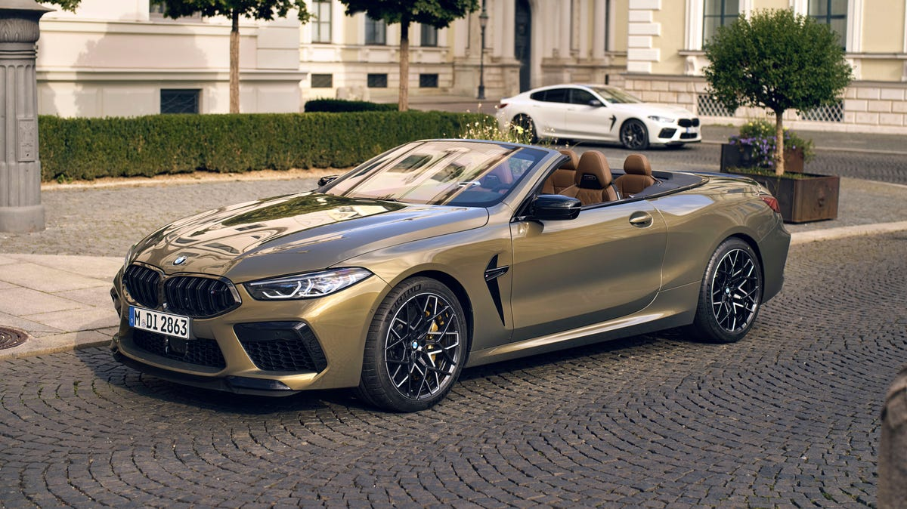

Overview
The 2024 BMW M8 combines some baffling specs. It's as heavy as a Ford F-150, it's quicker to 60 mph than a Ferrari F8 Tributo, it rips through the quarter-mile in the same time as a Chevrolet Corvette Z06, and it does all of this with a back seat and an implacable luxury poise the latter two don't possess. Admittedly, the back seat isn't practical for full-grown humans. Even so, the M8's soothing cabin is one of the best places to experience what bodacious power delivery and all-wheel-drive traction can achieve together. Available as either a coupe or convertible (the four-door M8 Gran Coupe sedan is reviewed separately), the M8 represents the kind of comprehensively capable luxury GT we're more used to seeing with an Aston Martin or Bentley badge and a far heftier price.
Modifications
There are no changes for the 2024 model year, it carries a lot from the 2023 model.
Pricing
The price of the 2024 BMW M8 starts at $140,795 and goes up to $150,795 depending on the trim and options.
Engine and Performance
The M8's long nose hides a twin-turbocharged 4.4-liter V-8 that makehorsepower and 553 pound-feet of torques 617 . It sends that power through an excellent eight-speed automatic and on to a rear-biased all-wheel-drive system that can disengage power to the front axle. After time spent in both the coupe and convertible, our only disappointment about the powertrain is the limp exhaust note. When we strapped our test gear to the 4251-pound M8 Competition coupe, we were blown away by its ridiculously quick acceleration, reaching 100 kph in just 2.5 seconds . Such explosive hustle deserves a hot-blooded song from the quad exhaust pipes. Small weaknesses emerge when pushing the M8, like minimal feedback through the thick steering wheel and a somewhat distant brake pedal feel. That said, those faults don't overshadow the enormous grip, compliant ride, and astonishing nimbleness of a two-door weighing more than two tons.

Fuel economy
The M8 coupe and convertible are expected to be equally fuel-inefficient in the city and on the highway. That is to say, they're both expected to earn 15 mpg city and 22 mpg highway. While we haven't tested any M8 on our 75-mph highway fuel-economy routes.